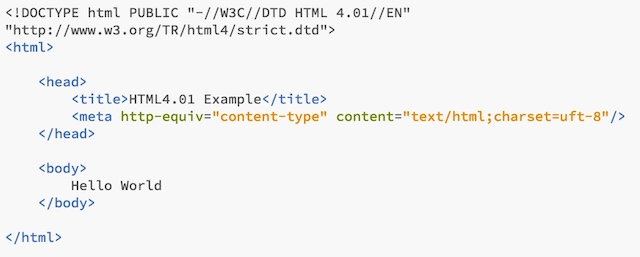
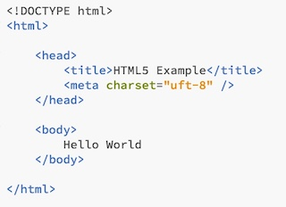

HTML
HTML Versions
- HTML was originally designed to be very simple and handle text based documents, but as the web became popular and web browsers developed, new features were added to subsequent versions.
- HTML 2.0 up to HTML 3.2 standardised common features
- Page structure, Forms, Images, Tables, Frames
- HTML 4.01 (1999) added enhancements for new technology:
- Support for CSS
- Support for dynamic scripting with Javascript
- Accessibilty features
- Standardised suppose for multimedia and embedded objects
Problems with HTML
- HTML was originally only targeted at web browsers on PCs and workstations
- This forgave syntax errors and variations in HTML markup (eg. missing end tags, lower/uppercase tag names)
- Required more processing at the browser than a markup language with stricter syntax
- This caused problems for constrained devices and for machine oriented processing of markup
- This all led to the development of XHTML 1.0 (2000/02)
XHTML
- XHTML was created by tightening up syntax by using XML markup rules
- XHTML uses the same tags and attribures as HTML 4.01
- The differences are in structure and syntax
- Tag/attribute names must be in lower case
- Attributes must be name/value pairs
- Tags must both open and close
- self-contained tags must be closed
- Special characters must use corrent entity values
Advantages of XHTML
- Designed for internationalisation, accessibility, device-independence, usability and document structuring
- Leads developers towards separation of concerns
Disadvantages of XHTML
- Complex evolution
- Requires new/reiengineered renderers to benefit over existing HTML development
- Unwieldy in contemporary use cases
HTML5
- HTML5 is more than just HTML, it is a logical extension of the three concerns:
- Markup - developed from HTML4.01/XHTML
- Presentation - extensions to CSS to form CSS3
- Behaviour - extensions to DOM
- Some core principles of HTML:
- To improve semanti organisation
- To replace scripting with core make up where possible
- To reduce need for browser plug ins
- To improve device independence
- HTML5 is important because it provides a cross platform, device independent option for rich application development.
- It includes features such as:
- Semantic content structure elements
- Logical video and audio elements for media playback
- New form controls - with set in validation
- Animation and drawings with CSS3, canvas tags and SVG
- Drag and drop interfaces
- Support for local offline storage which means some applications can be used offline
- Improved browser compatibility with CSS3
Basic HTML Structure
The basic structure to a html document is:
- A line containing HTML version information
- A declarative header sections (delimted by the <head> element
- A body which contains the document's actual content (delimited by the <body> element
- The head and body elements sections should be delimited by the <html> element
This is also shown in the examples below.
This is an example of HTML 4.01 and some the tags used.
This is an example of HTML5 and some of the tags used.
The video below shows some basic tags that can be used in a HTML document and show examples of their uses.